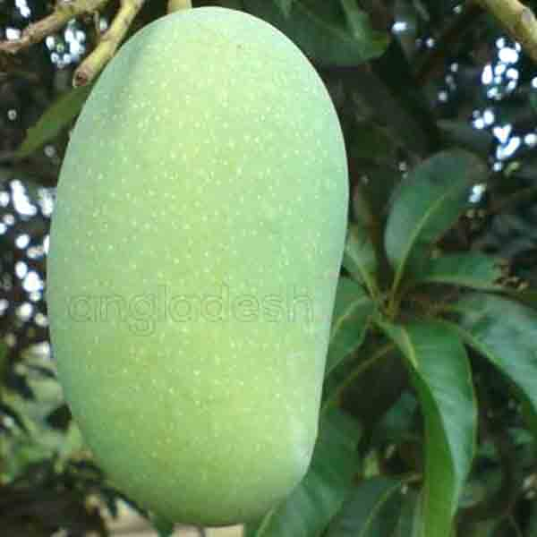
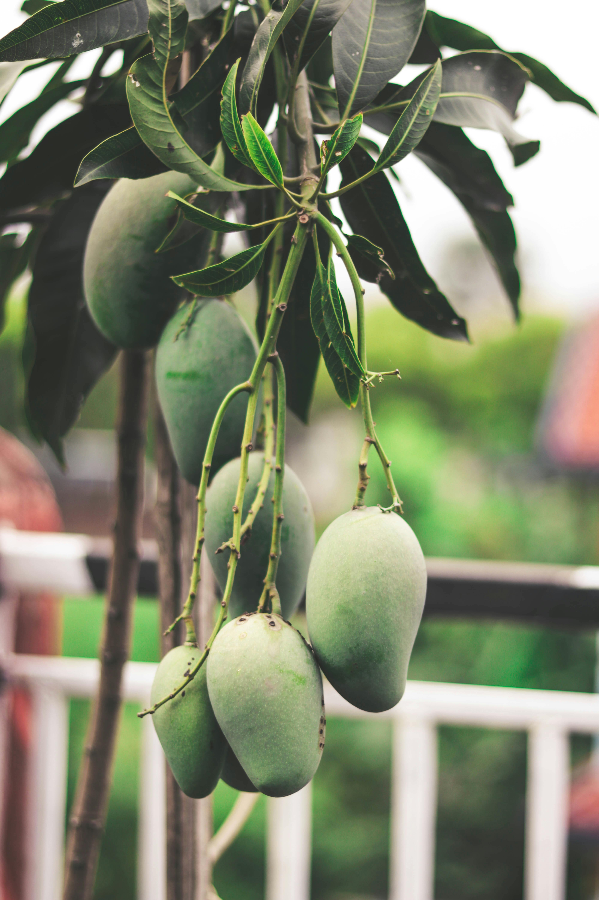
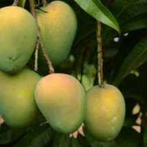
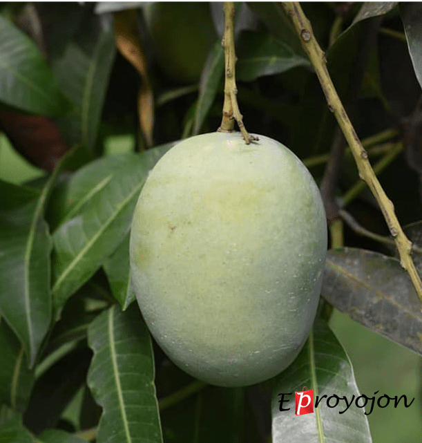
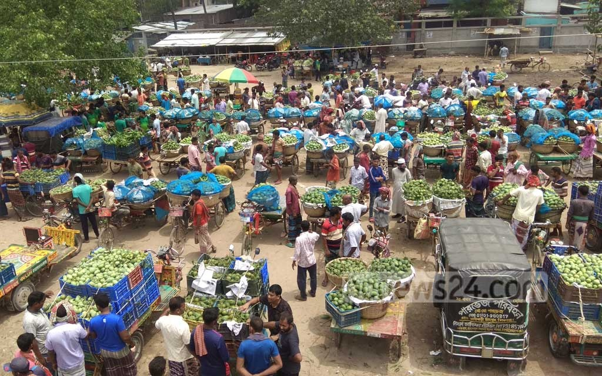
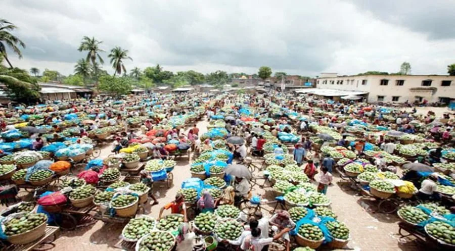
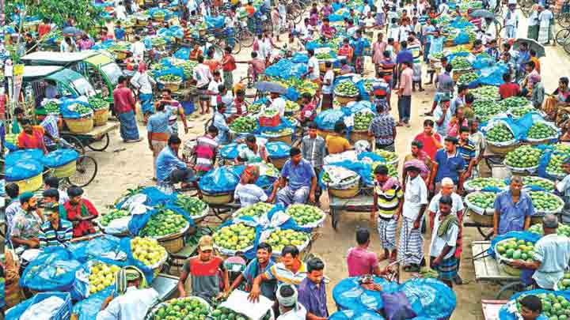

ফজলি
চাঁপাইনবাবগঞ্জের ফজলি আম (Fazli Mango) বাংলাদেশের সবচেয়ে বিখ্যাত ও বড় আকৃতির আমের একটি জাত। এটি শুধু স্বাদেই নয়, আয়তন, সংরক্ষণযোগ্যতা এবং ব্যবসায়িক দিক থেকেও খুব গুরুত্বপূর্ণ।
চাঁপাইনবাবগঞ্জ বাংলাদেশের আমের রাজধানী। এখানকার ফজলি, ল্যাংড়া, হিমসাগর সারাদেশে বিখ্যাত। এই ওয়েবসাইটে আপনি পাবেন আমের সকল তথ্য এক জায়গায়। চাঁপাইনবাবগঞ্জের আম বাংলাদেশের সবচেয়ে জনপ্রিয় ও বাণিজ্যিকভাবে গুরুত্বপূর্ণ ফলগুলোর একটি।


চাঁপাইনবাবগঞ্জের ফজলি আম (Fazli Mango) বাংলাদেশের সবচেয়ে বিখ্যাত ও বড় আকৃতির আমের একটি জাত। এটি শুধু স্বাদেই নয়, আয়তন, সংরক্ষণযোগ্যতা এবং ব্যবসায়িক দিক থেকেও খুব গুরুত্বপূর্ণ।

হিমসাগর আম (Himsagar) চাঁপাইনবাবগঞ্জসহ বাংলাদেশের অন্যতম শ্রেষ্ঠ এবং জনপ্রিয় একটি আমের জাত। অনেকে একে ক্ষিরসাপাত (Khirsapat) নামেও চেনে, তবে চাঁপাইনবাবগঞ্জে এটি প্রধানত হিমসাগর নামেই বেশি পরিচিত।

চাঁপাইনবাবগঞ্জের আরেকটি অমূল্য রত্ন হলো ল্যাংড়া আম (Langra Mango)। এটি বাংলাদেশের অন্যতম জনপ্রিয়, সুগন্ধি এবং অত্যন্ত রসালো আমের জাত।
দেশের সবচেয়ে বড় আম বাজার।চাঁপাইনবাবগঞ্জ জেলার শিবগঞ্জ উপজেলায় অবস্থিত, যা দেশের অন্যতম বড় ও গুরুত্বপূর্ণ পাইকারি আম বাজার হিসেবে পরিচিত। এটি মূলত সোনা মসজিদ স্থলবন্দর এবং ভারতীয় সীমান্ত সংলগ্ন হওয়ায় ব্যবসায়িকভাবে খুবই কৌশলগত স্থান।

রহনপুর আম বাজার (Rohanpur Mango Market) চাঁপাইনবাবগঞ্জ জেলার গোমস্তাপুর উপজেলা-তে অবস্থিত একটি অত্যন্ত গুরুত্বপূর্ণ ও সক্রিয় পাইকারি আম বাজার। এটি চাঁপাইনবাবগঞ্জের অন্যতম প্রধান আম হাটগুলোর একটি, বিশেষ করে রেলপথ সংযোগ থাকায় এখানে আম বাণিজ্য ব্যাপক আকারে হয়ে থাকে।

চাঁপাইনবাবগঞ্জ বাজার বলতে আমরা সাধারণত জেলার মূল শহর চাঁপাইনবাবগঞ্জ পৌর এলাকার আম বাজারগুলোকে বুঝি। এই জায়গা হচ্ছে জেলার কেন্দ্রস্থল এবং বাংলাদেশের আম বাণিজ্যের অন্যতম প্রাণকেন্দ্র। এখানকার বাজারগুলো শুধু স্থানীয় নয়, সারা দেশের পাইকারদের জন্যও অত্যন্ত গুরুত্বপূর্ণ।

মে থেকে আগস্ট (গোপালভোগ → ফজলি → আশ্বিনা পর্যন্ত)চাঁপাইনবাবগঞ্জসহ সারা বাংলাদেশে আমের মৌসুম (Am Mousum) সাধারণত মে থেকে আগস্ট পর্যন্ত হয়ে থাকে। তবে প্রতিটি জাতের আমের নির্দিষ্ট একটি পাকার সময় রয়েছে। নিচে সুন্দরভাবে মাসভিত্তিক সময়সূচি ও আমের নাম দেওয়া হলো:
অবস্থান: কানসাট, শিবগঞ্জ
আম: হিমসাগর, গোপালভোগ
চাষি: মোঃ আনোয়ারুল ইসলাম
ফোন: 01712-123456
বিশেষত্ব: ফরমালিনমুক্ত আম, অনলাইন অর্ডার সুবিধা
অবস্থান: গোমস্তাপুর
আম: ল্যাংড়া
চাষি: আব্দুল কাদের
ফোন: 01722-654321
বিশেষত্ব: নিজস্ব পরিবহন, ঢাকায় হোম ডেলিভারি
অবস্থান: ভোলাহাট
আম: ফজলি, আশ্বিনা
চাষি: সাদিকুল ইসলাম
ফোন: 01813-987654
বিশেষত্ব: বড় মাপের ফজলি, রপ্তানিযোগ্য মান
অবস্থান: রহনপুর, শিবগঞ্জ
আম: গোপালভোগ
চাষি: মোঃ হেলাল উদ্দিন
ফোন: 01919-112233
বিশেষত্ব: দ্রুত ডেলিভারি, কেমিকেলমুক্ত চাষ
অবস্থান: শিবগঞ্জ
আম: হিমসাগর, ফজলি
চাষি: জিয়াউর রহমান
ফোন: 01717-998877
বিশেষত্ব: কুরিয়ার সার্ভিসে সরবরাহ
অবস্থান: কানসাট
আম: হিমসাগর, ল্যাংড়া
চাষি: আজিজুল হক
ফোন: 01616-554433
বিশেষত্ব: হাতে পাড়া, অর্ডার অনুযায়ী প্যাক
এই ওয়েবসাইটের মাধ্যমে আপনি সরাসরি পেতে পারেন দেশি তাজা আম। সুস্বাদু, রসালো এবং ঝকঝকে আম, যা আপনার ভোজনকে করবে আরও রঙিন। সহজ অর্ডার ও দ্রুত ডেলিভারির মাধ্যমে তাজা আম পৌঁছে যাবে আপনার দ্বারে। এখনই অর্ডার করুন এবং আমের মজায় মাতুন!